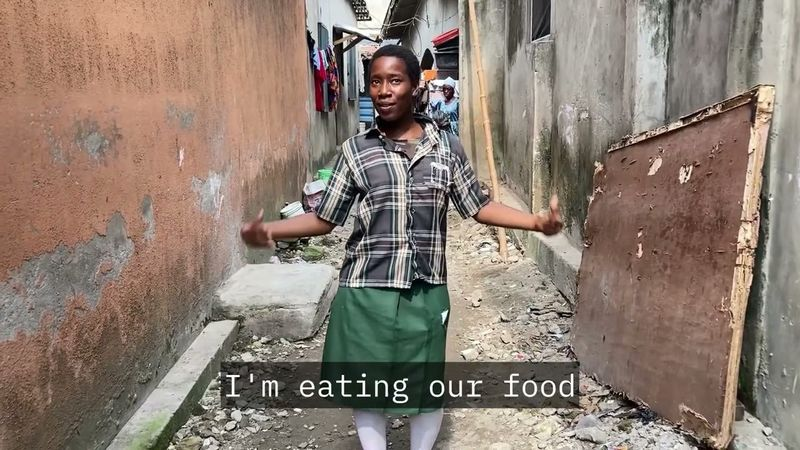
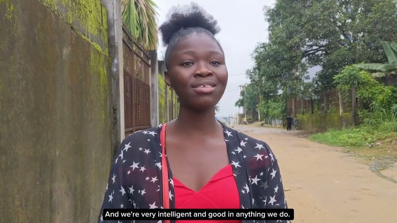

A youth cultural exchange
A global exchange of voices, stories, and perspectives from young people — on how they see themselves and each other.
100 voices6 regionsOne mirror
About
When we listen, we see ourselves more clearly.
Mirror Project is a youth-led cultural exchange built around video interviews. Founder Anya Zenooz set out to understand how stereotypes and identity form — and how young people see themselves and each other.
She interviewed about 100 young people across six regions: Argentina, Bolivia, Cameroon, China, Nigeria, and the Philippines. Those conversations became the documentary film Reflections.
Voices
Stories from six regions
Press play to hear young people in their own words. Each region has a playlist of interviews on the Mirror Project YouTube channel.




In their words
A few conversations from the same interviews — short clips on stereotypes, first impressions, and what people often get wrong.

Cameroon Voices

Common Stereotypes From Your Region

How do you personally feel when you hear stereotypes about people from your country?

What interesting things about teenagers in your country that people from other countries not know?
The film
Reflections
The documentary that grew out of these interviews. Young adults and teens from around the world discuss cultural stereotypes and their impact — in their own words.

Official Selection
San Diego Young Filmmakers Festival
2026
Official Selection
San Diego International Film Festival
2026
Reflections has been accepted to several film festivals, including the San Diego International Film Festival (Official Selection 2026) and the San Diego Young Filmmakers Festival.
At the San Diego Young Filmmakers Festival, the film was an official selection and screened on Saturday, May 30, 2026, at Reading Cinemas Grossmont in La Mesa, California, as one of 24 youth-made films (ages 12–17).


Watch Reflections and the interviews on YouTube, and follow along for new voices.
Subscribe on YouTube
The founder
Anya Zenooz
Anya Zenooz is a junior at Alpha School in Austin, TX, and a student filmmaker and author. As the founder of Mirror Project, she led a global initiative investigating youth experiences with stereotypes, a journey captured in the documentary Reflections.
Anya is particularly interested in the evolving role of social media and its profound influence on teen self-perception and social narratives. This focus extends to her writing; she is the author of Myth Busters: What They Don’t Teach You At School, a book helping middle schoolers navigate misinformation. Outside of her media projects, Anya is a student leader active in Model UN and Mock Trial and serves as co-captain of her school’s dance team.
Get involved
Share your story
Mirror Project is built on your voice. Every perspective matters. Tell us about yourself, your culture, and what you’d like the world to know.
Thank you for sharing. Your story has been sent to the Mirror Project team. We read every submission and will be in touch if we are filming in your region.
Questions
FAQ
What is Mirror Project?
Mirror Project is a global youth cultural exchange built around video interviews. We record the voices of young people and share them so others can hear how they see themselves and each other.
How can I be interviewed?
Head to the Share your story form and tell us a little about yourself. The team reviews submissions and reaches out when filming in your region.
Is this free to participate in?
Yes, completely. Mirror Project is nonprofit-minded. Participating, watching, and sharing are all free.
How can I support the project?
Share the videos, submit your story, and spread the word. For sponsorship or partnership inquiries, use the story form and mention that in your message, or reach out on Instagram, TikTok, or YouTube. A public email address will be added to this page when one is available.
Where have you recorded interviews?
We’ve recorded interviews with young people in six regions: Argentina, Bolivia, Cameroon, China, Nigeria, and the Philippines.
Contact
Get in touch
A public email address will be added here soon. In the meantime, the most reliable way to reach Mirror Project is the story form, or a message on Instagram, TikTok, or YouTube.